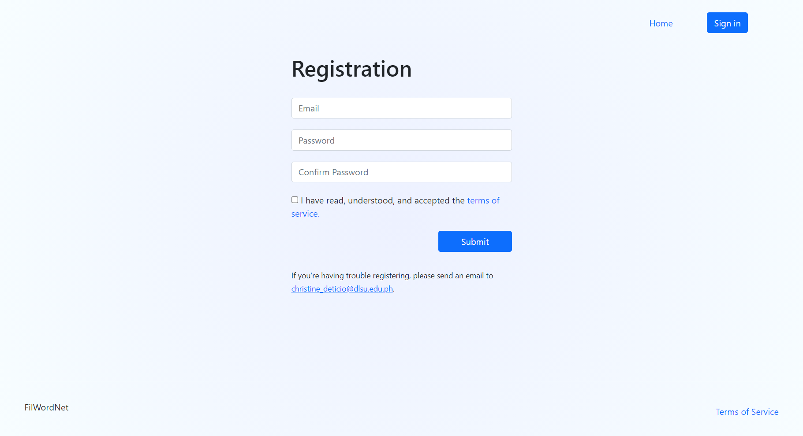

🡸 Home
One part of our thesis required us to gather annotations from volunteers.
To help speed up the process, we built an annotation tool, where volunteers would be grouping together sentences based on the meaning (or sense) of a certain word in the sentence.
Its basic features are being able to sign up, log in, create annotations, and log out. We used NextJS for the front-end and back-end, MongoDB for the database, and Vercel for deployment. The design is kept simple as people of different age groups will be using the tool.
Form validation is implemented on the register and login screen.


Registration page and log in page with an error.
Registration page and log in page with an error.